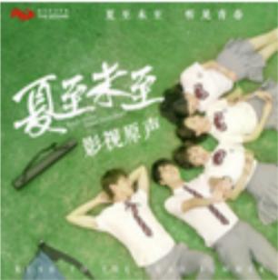

追光者 岑宁儿
《追光者》是岑宁儿演唱的歌曲，由唐恬作词，马敬作曲，是电视剧《夏至未至》的插曲 [1] ，收录于2017年6月19日发行的原声专辑《夏至未至·听见青春》中 [2] ，后收录于2017年12月12日发行的现场专辑《Live at Blue Note Beijing》中 [3] 。 2018年1月17日，该曲获得硬地围炉夜·2017网易云音乐原创盛典年度影视单曲奖 [4] 。3月26日，该曲获得第25届东方风云榜动感101年度金曲奖 [5]。
